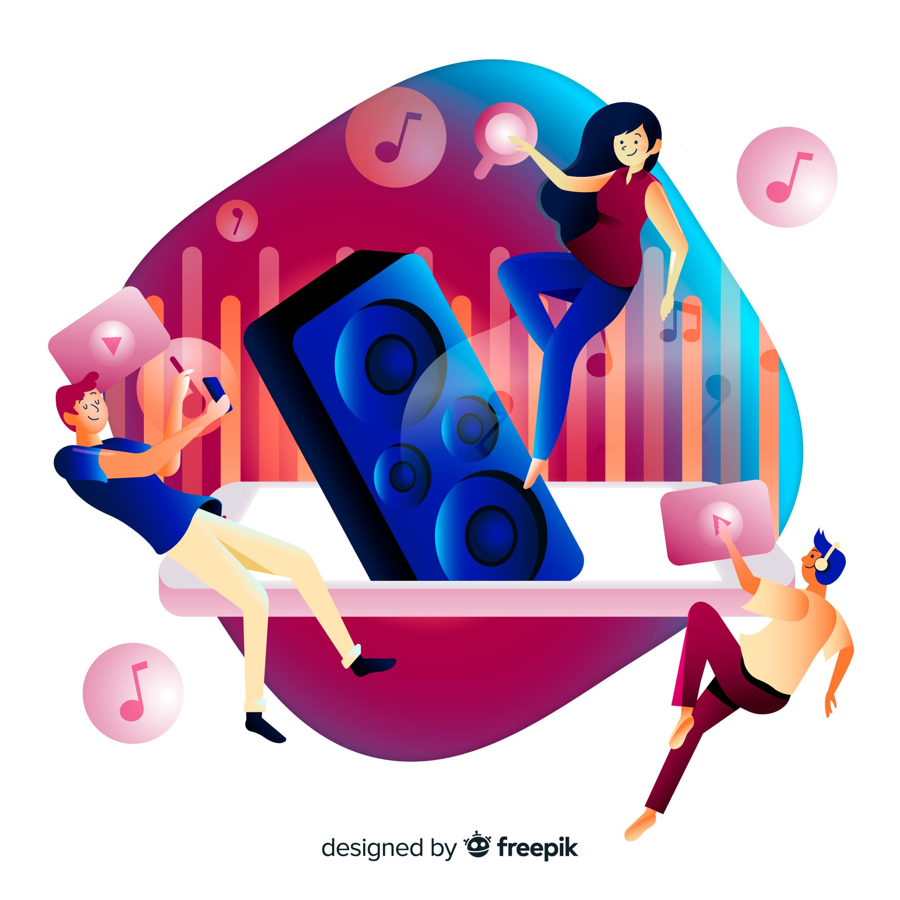

O Impacto dos Influenciadores nos Eventos: Conectando Audiências de Forma Autêntica

Introdução:
Nos últimos anos, testemunhamos uma mudança marcante na forma como as marcas e os organizadores de eventos abordam suas estratégias de marketing. A ascensão dos influenciadores digitais trouxe uma reviravolta nas práticas tradicionais, introduzindo uma abordagem mais autêntica e centrada no público. O impacto desses influenciadores vai além da mera promoção; eles se tornaram uma ponte poderosa entre os eventos e suas audiências, permitindo uma conexão genuína que ressoa com os participantes.
Com a proliferação das mídias sociais e o alcance global que elas proporcionam, os influenciadores têm se tornado intermediários cruciais para criar conscientização em torno de eventos. Suas vozes, muitas vezes seguidas por milhares ou até milhões, são capazes de atravessar fronteiras e nichos, tornando-se um veículo vital para a disseminação da informação. Através de posts, stories e vídeos, os influenciadores conseguem alcançar públicos que, de outra forma, poderiam passar despercebidos.
A autenticidade é a espinha dorsal do poder dos influenciadores em eventos. Ao compartilhar suas próprias experiências e opiniões, eles transformam a promoção de eventos em narrativas pessoais e envolventes. Essa abordagem não apenas cria um senso de confiança, mas também humaniza o evento, tornando-o mais acessível e emocionalmente envolvente. Os seguidores não estão apenas vendo anúncios, estão testemunhando alguém compartilhar uma parte de si mesmo, o que aumenta a conexão emocional.
Uma das fases mais cruciais para qualquer evento é a antecipação prévia, e os influenciadores dominam essa etapa com maestria. Através de teasers, bastidores exclusivos e conteúdo pré-evento, eles constroem uma atmosfera de empolgação e curiosidade. Ao trazer os seguidores para os bastidores e compartilhar momentos íntimos, os influenciadores fazem com que os potenciais participantes se sintam como parte da jornada, mesmo antes do evento começar.
A influência dos influenciadores não termina quando o evento começa. Muitos deles continuam engajando seus seguidores em tempo real, fornecendo atualizações e vislumbres do que está acontecendo. Isso mantém o interesse do público elevado e incentiva a participação mesmo para aqueles que não podem comparecer presencialmente. Além disso, os influenciadores podem agir como pontes virtuais, permitindo que os participantes se conectem com eles, fazendo perguntas ou expressando suas emoções.
As mídias visuais, especialmente nas plataformas de mídia social, desempenham um papel fundamental na promoção de eventos. Os influenciadores são especialistas em criar conteúdo visualmente atraente, tirando fotos e gravando vídeos que não apenas transmitem informações, mas também evocam emoções. Esses elementos visuais têm um impacto profundo, pois estimulam os sentidos e tornam a experiência do evento mais tangível, mesmo para aqueles que estão apenas acompanhando remotamente.
O relacionamento entre influenciadores e eventos é simbiótico. Os influenciadores ganham acesso a experiências exclusivas, o que enriquece seu conteúdo e atrai mais seguidores. Por outro lado, os eventos ganham exposição orgânica e autêntica para audiências que podem ter sido difíceis de alcançar de outra forma. Essa colaboração estratégica é uma fórmula vencedora para criar experiências de evento mais envolventes e significativas.
À medida que os eventos continuam a evoluir, os influenciadores permanecerão como um componente vital da estratégia de marketing. Eles não apenas impulsionam a conscientização, mas também elevam a experiência geral, proporcionando uma abordagem autêntica e pessoal para engajar públicos diversos. Com sua habilidade de criar conexões emocionais, amplificar o alcance e humanizar os eventos, os influenciadores solidificam seu lugar como agentes de mudança no cenário dos eventos modernos.
Amplificação de Alcance e Conscientização
A presença de influenciadores digitais nos eventos é como um megafone para a conscientização. Eles não apenas trazem consigo uma base sólida de seguidores engajados, mas também têm a capacidade de segmentar esse público de maneira precisa e eficaz. Cada influenciador carrega consigo um nicho específico de público que compartilha interesses, valores e paixões semelhantes. Quando se unem a eventos, essa ligação entre o influenciador e seu público é um trampolim para a divulgação.
Imagine um influenciador de viagens apaixonado por aventuras ao ar livre. Se esse influenciador colabora com um evento de esportes radicais, sua mensagem ressoa com a audiência que já está entusiasmada com a mesma temática. Essa combinação de interesses comuns cria uma conexão imediata, tornando o conteúdo compartilhado muito mais relevante e atrativo. Dessa forma, os influenciadores podem ser considerados especialistas em estabelecer a ponte entre os eventos e os participantes ideais.
A amplificação da conscientização é um dos aspectos mais notáveis da presença de influenciadores em eventos. Ao compartilhar detalhes sobre o evento em suas plataformas, eles instantaneamente expõem o conteúdo a um público mais amplo e diversificado. Isso é particularmente valioso para eventos que estão em busca de novos participantes. Os influenciadores ajudam a quebrar barreiras geográficas, uma vez que podem alcançar seguidores de diferentes partes do mundo, aumentando o alcance geográfico do evento de maneira impressionante.
Além disso, o conteúdo compartilhado pelos influenciadores é muitas vezes mais do que apenas um anúncio padrão. Eles são mestres na arte de contar histórias e envolver seu público, o que significa que não apenas transmitem informações sobre o evento, mas também o apresentam de maneira atraente. Eles podem compartilhar experiências pessoais, detalhes interessantes e até mesmo oferecer um vislumbre dos bastidores, tornando o evento mais tangível e emocionalmente envolvente.
Para eventos que buscam diversificar seu público, a colaboração com influenciadores pode ser especialmente benéfica. Esses criadores de conteúdo têm seguidores de diversas origens e interesses. Ao trazer influenciadores de diferentes nichos, os eventos têm a oportunidade de alcançar públicos que podem não ter sido previamente considerados. Isso não apenas diversifica a audiência, mas também enriquece a experiência geral, pois traz uma mistura única de perspectivas e interesses.
Em um mundo onde as mídias sociais têm um impacto cada vez maior, a parceria com influenciadores é uma estratégia que os eventos não podem mais ignorar. Sua habilidade de amplificar a conscientização, atingir nichos específicos e criar conexões autênticas é um ativo valioso. Ao compartilhar detalhes sobre os eventos para seus seguidores, eles não apenas aumentam a visibilidade, mas também ajudam a construir uma comunidade engajada e entusiástica em torno do evento. E, à medida que a era digital continua a evoluir, o papel dos influenciadores na promoção de eventos só tende a crescer em importância.
Criação de Antecipação e Excitação Pré-Evento
Os influenciadores, dotados de sua habilidade inata de criar conteúdo atraente, desempenham um papel de destaque na construção de antecipação e excitação em torno de eventos. Ao utilizar suas plataformas sociais, eles transformam a simples ideia de um evento iminente em uma experiência envolvente e emocionante para seus seguidores. Essa capacidade de gerar um buzz palpável é uma das maiores contribuições dos influenciadores para o sucesso de um evento.
A magia começa com os "teasers" estrategicamente divulgados pelos influenciadores. A arte de provocar a curiosidade é uma ferramenta poderosa nas mãos desses criadores de conteúdo. Através de imagens enigmáticas, mensagens misteriosas e pistas provocativas, eles instigam a imaginação de seus seguidores, despertando um interesse genuíno pelo evento que está por vir. Essa abordagem cria um senso de mistério e intriga que envolve os participantes em potencial, alimentando a expectativa.
Mas não para por aí. Os bastidores são onde os influenciadores realmente brilham. Eles levam seus seguidores para os corredores ocultos do evento, compartilhando detalhes exclusivos, entrevistas com organizadores, vislumbres dos preparativos e até mesmo mostrando o lado humano da equipe por trás do evento. Isso não apenas traz uma dose de autenticidade à promoção, mas também proporciona uma visão tangível da dedicação e esforço que estão sendo investidos na realização do evento. Os seguidores se tornam parte da jornada, tornando-se cúmplices na construção do sucesso do evento.
As informações exclusivas, reveladas gradualmente pelos influenciadores, desencadeiam uma sensação de pertencimento. Os seguidores que estão acompanhando esses bastidores sentem que fazem parte de um grupo seleto que tem acesso aos detalhes internos do evento. Essa sensação de exclusividade aumenta o valor percebido do evento e reforça o entusiasmo dos participantes. A medida que informações são liberadas aos poucos, a ansiedade em relação ao evento cresce, criando um ciclo de expectativa positiva.
O impacto dessa estratégia é mais do que palpável. Os influenciadores, com seu talento para a narrativa visual e emocional, elevam o evento de um mero acontecimento a um acontecimento imperdível. Sua habilidade de traduzir a essência do evento em imagens e palavras cativantes faz com que os seguidores se envolvam de maneira profunda. Isso se traduz em números concretos, como um aumento no número de inscrições e na participação ativa dos envolvidos. A antecipação bem construída pelos influenciadores não só enriquece a experiência pré-evento, mas também estabelece uma base sólida para um evento de sucesso.
Em última análise, a colaboração entre influenciadores e eventos transcende a promoção pura e simples. Ela se torna uma jornada emocional compartilhada, uma experiência colaborativa em que os influenciadores atuam como condutores da empolgação. Sua capacidade de criar antecipação e excitação é um testemunho do poder da conexão humana e da narrativa envolvente, que não só aumenta a participação, mas também cria memórias duradouras para os participantes.
Humanização e Autenticidade
os dias de hoje, onde o bombardeio de informações e a comercialização estão por toda parte, a humanização se tornou uma estratégia essencial para estabelecer conexões significativas com o público. E é aqui que os influenciadores entram em cena como agentes-chave na humanização de marcas e, especialmente, de eventos. A habilidade deles de compartilhar suas próprias experiências pessoais, opiniões e emoções em relação a um evento é um tesouro no reino da promoção autêntica.
Um dos aspectos mais atraentes dos influenciadores é que eles são pessoas reais. Eles têm histórias, personalidades e perspectivas únicas, o que os torna muito mais acessíveis e identificáveis do que as marcas tradicionais. Quando um influenciador compartilha suas emoções sobre um evento, não está simplesmente vendendo um produto ou uma experiência, está compartilhando sua própria jornada. Essa vulnerabilidade e honestidade ressoam profundamente com os seguidores, pois os lembra de que todos são seres humanos com sentimentos genuínos.
Ao compartilhar suas próprias experiências, influenciadores criam uma conexão emocional genuína com seus seguidores. Eles se tornam narradores pessoais das histórias dos eventos, tornando a promoção menos comercial e mais pessoal. Essa abordagem não apenas adiciona um toque humano, mas também cria um senso de autenticidade que é altamente valorizado pelo público atual. Em um mundo inundado de marketing impessoal, essa autenticidade se destaca e atrai os participantes em potencial.
Além disso, os influenciadores oferecem uma visão pessoal e honesta sobre os eventos. Eles podem compartilhar suas próprias opiniões, expectativas e até preocupações. Isso não apenas torna a promoção mais transparente, mas também permite que os participantes tenham uma compreensão mais profunda do que esperar. Saber que um influenciador teve uma experiência genuína com um evento aumenta a confiança e reduz a incerteza, o que é especialmente importante para aqueles que estão considerando participar pela primeira vez.
A humanização que os influenciadores trazem para a promoção de eventos também tem um apelo emocional duradouro. Quando os seguidores se conectam com as histórias e experiências pessoais compartilhadas pelos influenciadores, eles não estão apenas sendo vendidos, estão se envolvendo em uma narrativa que ressoa com suas próprias vidas. Isso cria uma ligação mais profunda e uma memória mais duradoura, o que não só aumenta a participação atual, mas também gera lealdade e advocacy a longo prazo.
Criação de Conteúdo Visual Atraente
A estética visual desempenha um papel fundamental em como percebemos e nos conectamos com o mundo ao nosso redor. Os influenciadores, com sua capacidade inata de criar conteúdo visualmente atraente, assumem o papel de curadores artísticos na promoção de eventos. Essa habilidade deles em tirar fotos incríveis, gravar vídeos interessantes e criar histórias envolventes eleva a narrativa visual de um evento a níveis excepcionais.
As redes sociais têm transformado a forma como consumimos informações, e a imagem é um idioma universal nesse contexto. Os influenciadores compreendem isso profundamente e se destacam na arte de criar imagens esteticamente cativantes. Seja capturando momentos espontâneos nos bastidores, fotografando detalhes vívidos da decoração ou filmando cenas que transmitem a atmosfera do evento, eles conseguem traduzir a essência do evento em imagens que falam diretamente ao coração do público.
Através de vídeos, os influenciadores são capazes de transportar seus seguidores para o ambiente do evento de maneira virtual. Seja através de vlogs, transmissões ao vivo ou vídeos editados, eles conseguem transmitir a energia, a emoção e a experiência de estar presente no evento. Ao capturar os momentos mais marcantes e as interações significativas, eles criam um registro visual dinâmico que não apenas preserva o momento, mas também evoca emoções.
As histórias que os influenciadores contam através de seu conteúdo visual têm o poder de criar uma jornada virtual para o público. Começando com a antecipação pré-evento, eles compartilham teasers e bastidores que alimentam a curiosidade. Durante o evento, eles mergulham os seguidores em uma experiência visualmente envolvente, capturando a atmosfera, as atividades e as pessoas. E após o evento, eles oferecem uma retrospectiva que imortaliza os momentos mais memoráveis. Essa narrativa visual não apenas prende a atenção dos seguidores, mas também os fazem sentir como se estivessem participando ativamente.
Além de serem uma experiência para os olhos, as imagens e os vídeos dos influenciadores são uma ferramenta poderosa de compartilhamento. Quando os participantes do evento veem suas experiências registradas de maneira visualmente atraente, eles naturalmente se sentem compelidos a compartilhá-las em suas próprias redes sociais. Isso cria um efeito cascata, onde as imagens e os vídeos se espalham organicamente, aumentando ainda mais o alcance online do evento.
A contribuição dos influenciadores para a narrativa visual de um evento é um ciclo virtuoso. Sua habilidade em criar conteúdo estético não apenas enriquece a experiência para aqueles que participam, mas também amplifica a conscientização e a atração para futuros participantes. Ao tirar fotos incríveis, gravar vídeos envolventes e criar histórias visualmente atraentes, os influenciadores adicionam uma dimensão tangível e emocional à promoção do evento, tornando-o mais memorável e impactante para todos os envolvidos.
Feedback e Melhoria Contínua
Os influenciadores vão além de serem apenas promotores de eventos; eles também desempenham um papel estratégico e valioso na avaliação e aprimoramento contínuo das experiências oferecidas. Sua capacidade de oferecer uma perspectiva autêntica e genuína sobre a experiência do evento é uma ferramenta valiosa para os organizadores. Ao compartilhar seus insights e opiniões sobre o evento, os influenciadores fornecem um feedback valioso que pode ajudar os organizadores a entender o que funcionou bem e o que pode ser aprimorado.
Os influenciadores têm uma visão única, pois muitas vezes estão imersos na cultura e na comunidade que rodeia o evento. Eles podem identificar elementos que ressoaram com o público, destacar aspectos que surpreenderam e compartilhar os pontos fortes que tornaram a experiência memorável. Essas percepções podem ser um guia importante para os organizadores entenderem as partes do evento que tiveram sucesso e que devem ser mantidas no futuro.
Além disso, os influenciadores também podem apontar áreas que podem ser melhoradas. Sua honestidade e autenticidade são valiosas para destacar aspectos que talvez não tenham funcionado tão bem quanto o esperado. Seja na logística do evento, na organização, na variedade de atividades ou mesmo nas expectativas dos participantes, os influenciadores podem oferecer uma visão crítica e construtiva que os organizadores podem usar para aprimorar futuros eventos.
Esse ciclo contínuo de feedback e melhoria é essencial para a evolução dos eventos ao longo do tempo. Com base nos insights dos influenciadores, os organizadores podem ajustar sua abordagem, implementar melhorias e criar eventos cada vez mais alinhados com as expectativas e desejos do público. Isso leva a uma progressão natural, onde cada evento é uma oportunidade de aprendizado e aprimoramento, criando uma experiência progressivamente mais rica para os participantes.
os influenciadores desempenham um papel crucial que vai muito além da promoção inicial. Sua capacidade de oferecer uma perspectiva valiosa sobre a experiência do evento, combinada com seu alcance e habilidade de criar conexões emocionais, transforma-os em parceiros estratégicos para os organizadores de eventos. Ao alavancar a influência digital desses criadores de conteúdo, os eventos podem não apenas atrair um público mais amplo, mas também evoluir e se adaptar continuamente para proporcionar experiências verdadeiramente memoráveis e impactantes. Os influenciadores se tornam uma extensão autêntica da celebração, conectando audiências e criando um legado duradouro de eventos excepcionais.
conclusão
Em um cenário em constante evolução, os influenciadores emergiram como catalisadores de transformação na forma como os eventos são promovidos, experimentados e melhorados. Sua presença e impacto transcendem as práticas tradicionais de marketing, trazendo autenticidade, conexão emocional e uma narrativa visual atraente para a promoção de eventos. À medida que exploramos o papel dos influenciadores nos eventos, fica claro que eles não são meramente promotores, mas sim parceiros estratégicos na criação de experiências memoráveis e impactantes.
Ao unir seus seguidores leais com eventos relevantes, os influenciadores expandem a conscientização de maneira notável. Sua capacidade de amplificar a mensagem e alcançar nichos específicos de público é um trunfo valioso. Além disso, a criação de antecipação e empolgação pré-evento é uma habilidade inegável dos influenciadores. Eles transformam o ato de participar de um evento em uma jornada emocional, compartilhando detalhes exclusivos e momentos íntimos que envolvem os participantes mesmo antes do evento começar.
A humanização e autenticidade trazidas pelos influenciadores elevam a conexão entre eventos e participantes para um nível pessoal. Ao compartilhar suas próprias experiências, emoções e opiniões, eles constroem confiança e estabelecem uma relação genuína com seus seguidores. Isso torna a promoção do evento menos comercial e mais envolvente, à medida que os seguidores se sentem parte de uma comunidade unida por interesses compartilhados.
A criação de conteúdo visualmente atraente pelos influenciadores proporciona uma experiência virtual envolvente, aproximando os participantes da atmosfera do evento. Suas imagens e vídeos capturam momentos memoráveis, despertam emoções e preservam a experiência para os envolvidos e os que acompanham à distância. Além disso, o feedback e a melhoria contínua fornecidos pelos influenciadores auxiliam os organizadores na avaliação e aprimoramento constante dos eventos, criando uma jornada de evolução e inovação.
Em conclusão, os influenciadores têm redefinido o cenário dos eventos, transformando-os de meros acontecimentos em experiências autênticas e envolventes. Sua capacidade de amplificar o alcance, criar antecipação, humanizar marcas, produzir conteúdo visualmente cativante e oferecer insights valiosos é um testemunho do papel vital que desempenham. Com sua influência digital, os influenciadores não apenas atraem audiências mais amplas, mas também moldam a maneira como os eventos são percebidos, experienciados e aprimorados. E, à medida que o poder da influência continua a crescer, o futuro dos eventos certamente será moldado pela colaboração estratégica entre criadores de conteúdo e organizadores, resultando em experiências que deixam uma marca duradoura em todos os envolvidos.